STAGE 1 · 看一眼
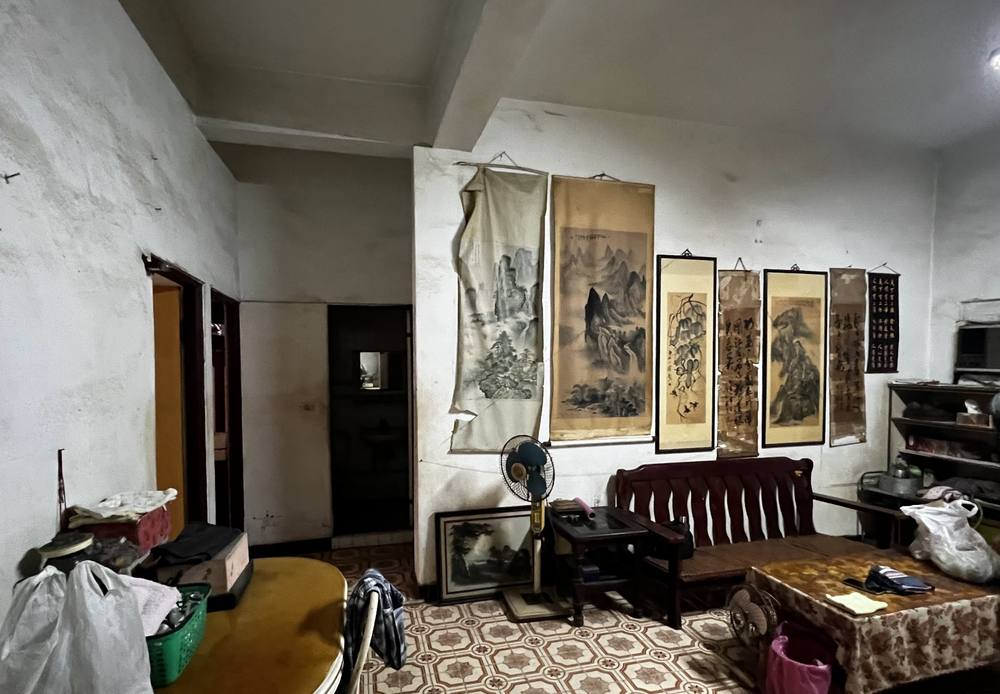
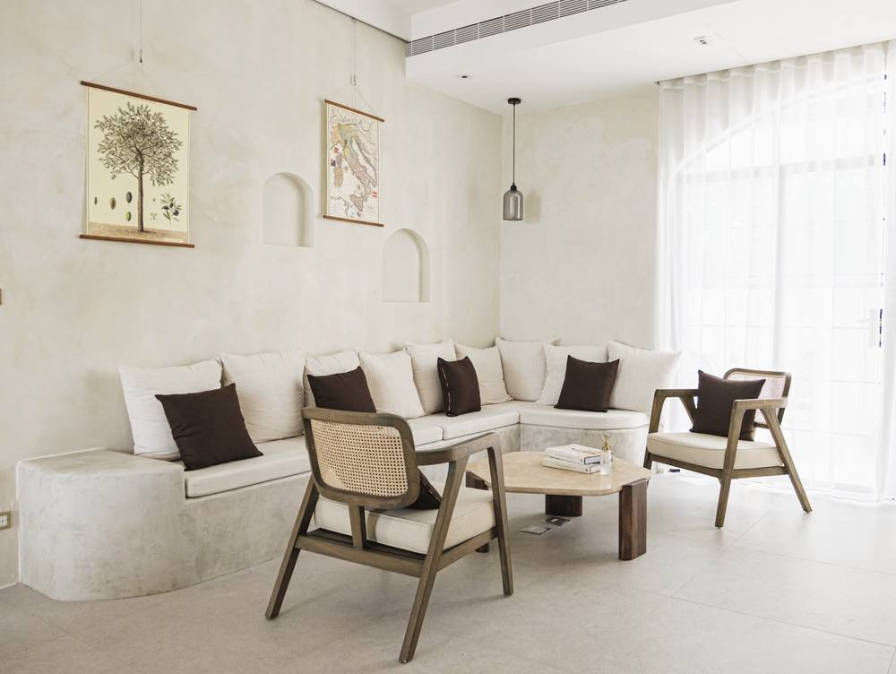
高雄前鎮 · 40 年公寓 · 45 坪
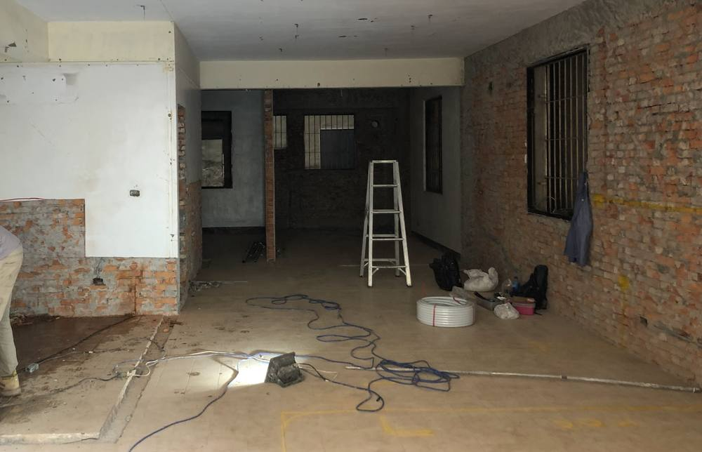
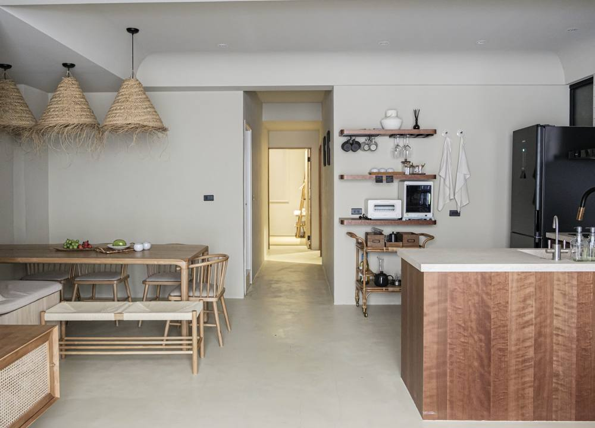
高雄苓雅 · 37 年公寓 · 28 坪
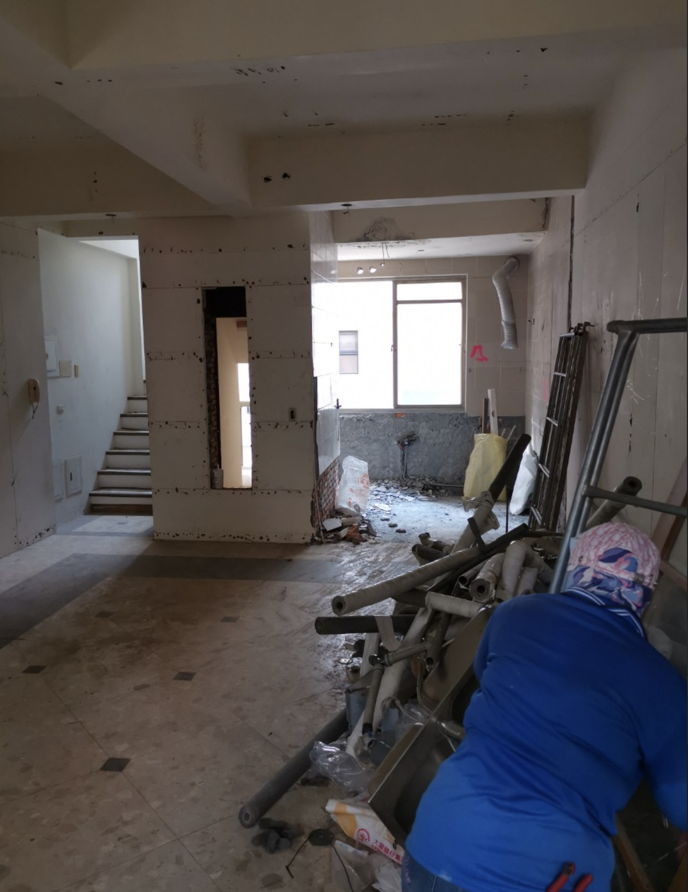
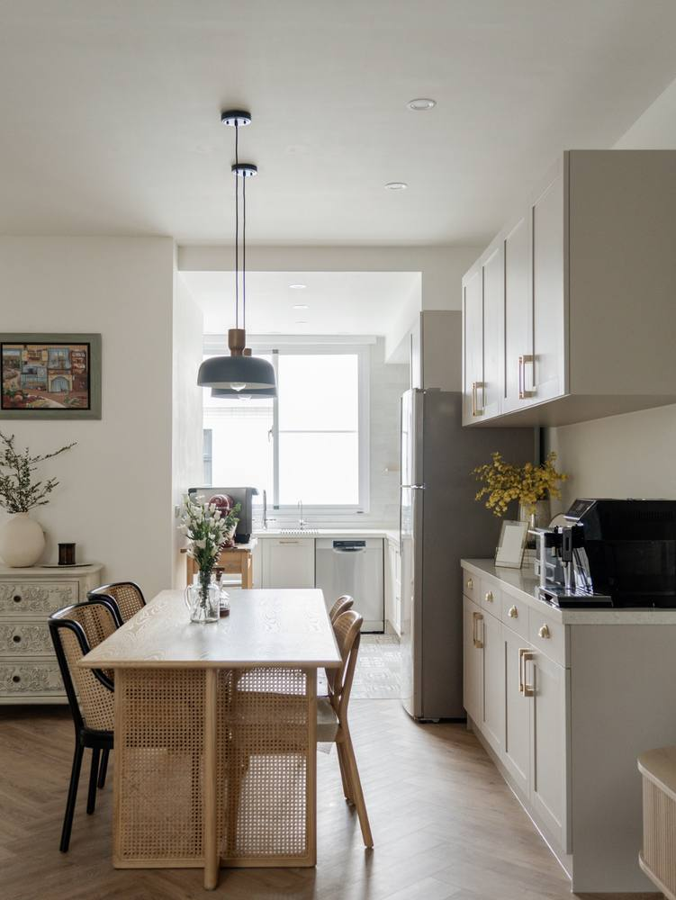
高雄鳥松 · 27 年透天 · 60 坪
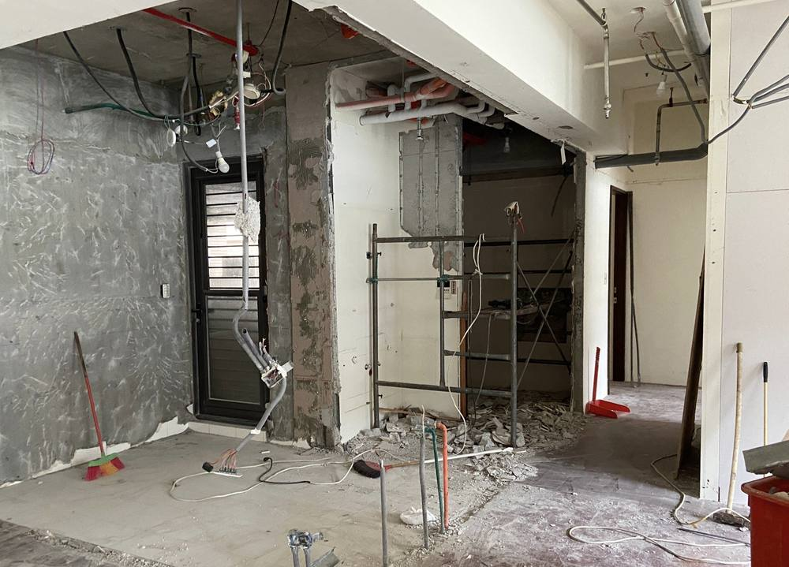
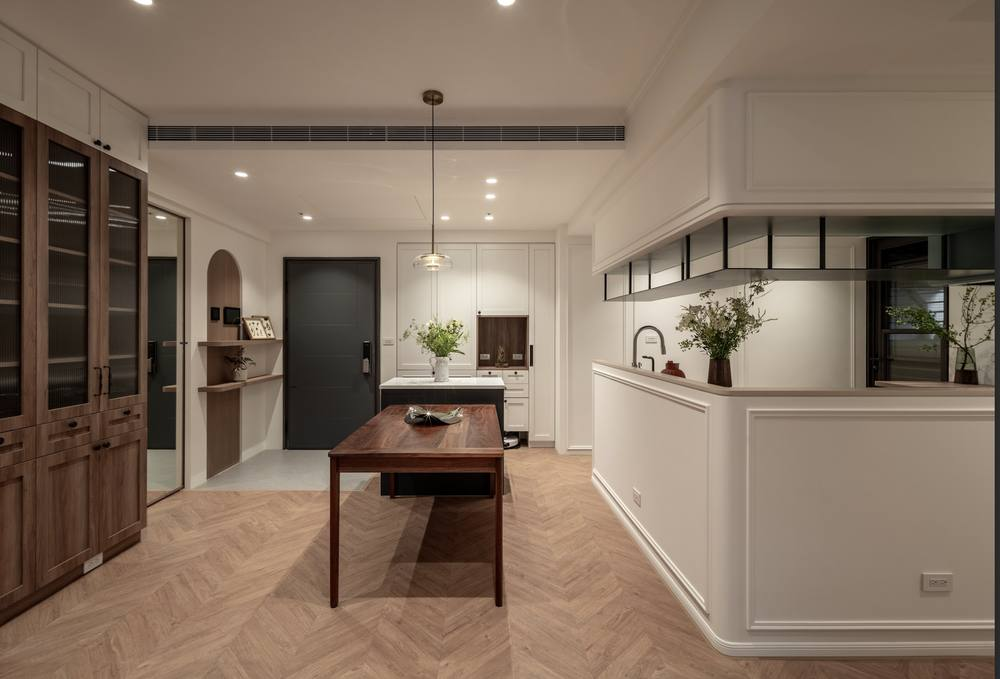
台北新店 · 7 年大樓 · 37 坪
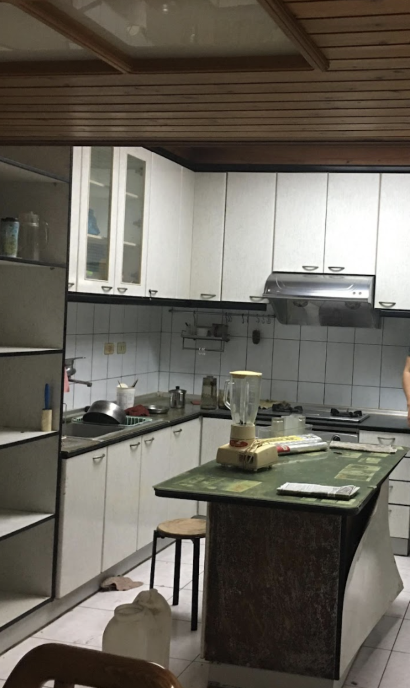
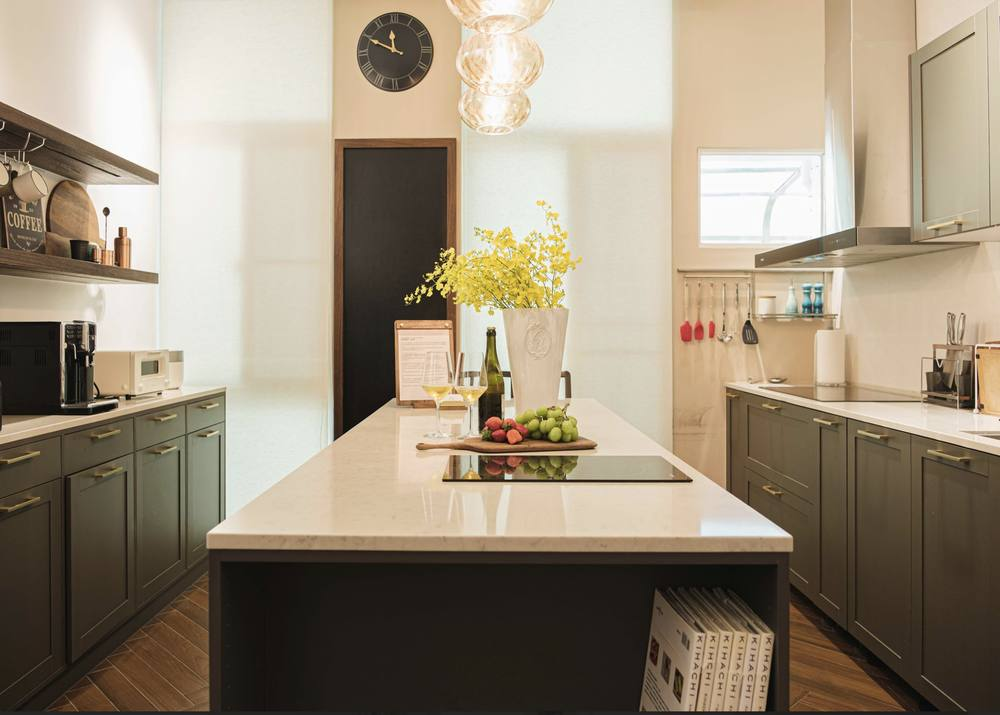
高雄前鎮 · 32 年透天 · 70 坪
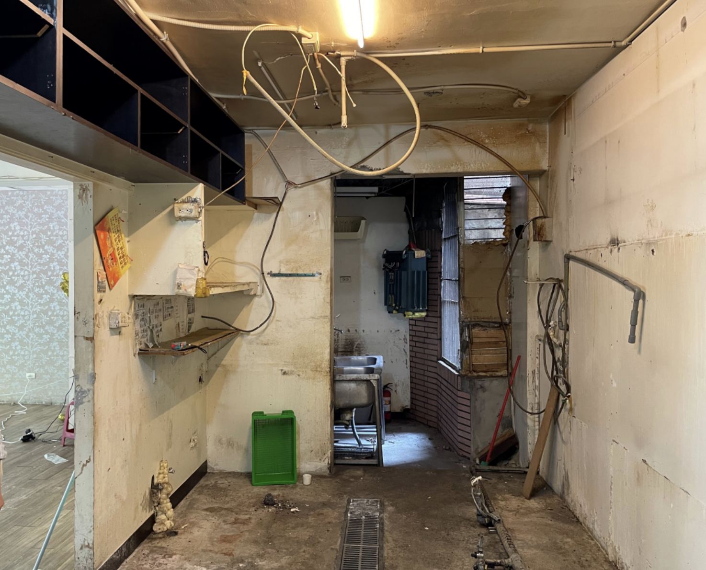
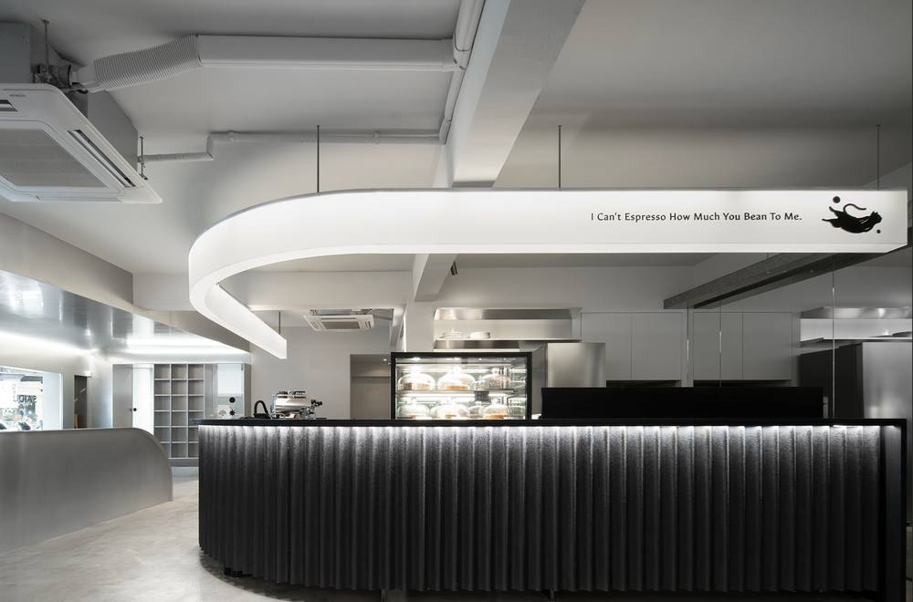
台北新店 · 咖啡廳 · 22 坪
不需註冊、不需加 LINE、立刻知道。
STAGE 2 · 7 題診斷
第 1 / 7 題
STAGE 3 · 粗估範圍
同樣 30 坪老屋，可能 200 萬也可能 600 萬。差距來自 4 個關鍵變數，不到現場看不出來：
樑柱有沒有裂縫？要不要改格局？打除前看不到。
管線老化程度、總電量是否需升級、糞管排水有沒有逆水坡。
同樣品項，國產與進口可差 3 倍。但不一定貴的好。
電梯能不能載？樓梯狹不狹窄？這影響工資 10–20%。
已經想預約諮詢？ 加入官方 LINE →